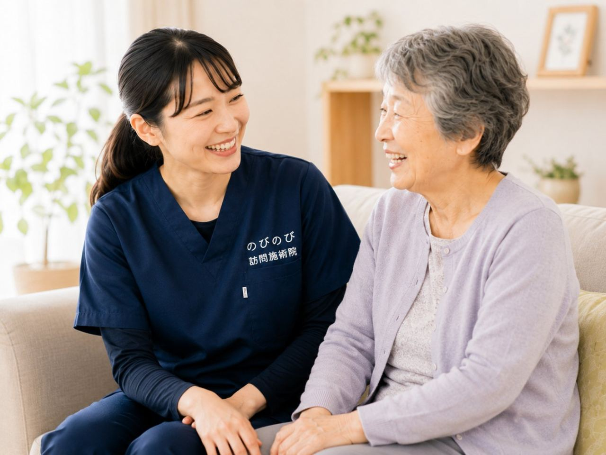

寝て過ごす時間が長くなると、心配になるのが床ずれ（褥瘡）です。同じところに体重がかかり続けると血のめぐりが滞り、赤みやただれが生じやすくなります。一度できると治りにくく、ご本人にもご家族にもつらいものです。のびのび訪問施術院では、外出がつらい方のご自宅へ国家資格者がうかがい、こわばりとめぐりの面から予防を支えます。できてしまった床ずれの処置は医師・訪問看護の役割で、鍼灸マッサージはそれを防ぐ体づくりを助ける補助の立場です。寝返り介助の視点も交えてお伝えします。
この記事のポイント
動かない時間が続くと血流が滞り、床ずれ（褥瘡）ができやすくなります。予防の土台はこまめな体位変換です。あわせて関節を動かしてめぐりを助け、寝返りしやすい体を保つ在宅ケアが役立ちます。鍼灸マッサージはあくまで補助です。医師の同意にもとづく医療保険で、料金は1回3,950円、1割なら約395円が目安。別途の出張費はかからず、介護保険の限度額とは別枠です。受けるには同意書が必要で、要介護認定は不要。効果には個人差があります。皮膚に赤み・びらん・熱感・浸出液があれば、まず医師や看護師へご相談ください。
床ずれ（褥瘡）は、なぜできるのか
床ずれは、長い時間同じ姿勢でいることで体の重みにより皮膚や皮下の組織が圧迫され、血のめぐりが滞ってできると考えられています。お尻や腰の骨の出っぱり、かかと、背中、後頭部など、骨が出ていて体重のかかりやすいところにできやすいものです。
自分で寝返りが打てない方、栄養や水分が足りない方、皮膚が弱くなっている方は、とくに注意が必要とされています。まず大切なのは、同じところに圧がかかり続けないようにすることです。個人差はありますが、こまめに向きを変える工夫が予防の第一歩になります。
予防の土台は「体位変換」と寝返り介助
床ずれ予防のいちばんの土台は、時間を決めて体の向きを変える体位変換です。ご家庭では、クッションや専用の寝具で圧を分散する、しわのないよう寝具を整えるといった工夫が助けになります。寝返り介助の際は、引きずらずに持ち上げるように動かすと皮膚への摩擦を減らしやすいとされています。
関節のこわばりが和らいでいると、こうした寝返りや体位変換もしやすくなります。具体的なやり方は、訪問看護やケアマネジャーとも連携しながら、ご家庭に合った形をご一緒に考えていけます。関節の拘縮・寝たきり予防もあわせてご覧ください。
赤み・びらんに気づいたら、まず医療へ
大切なことをお伝えします。皮膚が赤くなって押しても色が戻らない、皮がむけている、びらん（ただれ）がある、じくじくと浸出液が出ている、熱感がある、黒っぽくなっている。こうした床ずれのサインに気づいたら、まず主治医や訪問看護にご相談ください。できてしまった床ずれの処置は、医師・訪問看護の役割です。
私たちがうかがったときも、皮膚に赤み・びらん・熱感・浸出液などの変化がないかを確かめます。気になる変化があれば患部は直接施術せず、医師や看護師への相談をおすすめします。安全を確かめたうえで、傷のない部分のこわばりやめぐりの滞りを和らげていきます。
床ずれを防ぐために、鍼やお灸ができること
鍼やお灸、やさしい手技には、こわばった筋肉を和らげ、血のめぐりを促す働きが期待できるとされています。めぐりが整うことは、皮膚や組織が元気を保つうえで助けになると考えられます。ただし効果には個人差があり、床ずれを必ず防ぐと言い切れるものではありません。
また、体を動かす機能訓練で関節のかたさをやわらげておくと、寝返りや姿勢を変えることがしやすくなります。のびのびでは、これらを組み合わせ、床ずれのできにくい体づくりを、めぐりとこわばりの面から支えます。これらに追加の料金はかかりません。あくまで医療の処置を補う補助の立場です。
関節を動かし、寝返りしやすい体を保つ
動かない時間が続くと、関節はかたく縮こまりやすくなります。関節が動きにくくなると寝返りや体位変換がしづらくなり、同じ場所に圧がかかる時間が延びてしまいがちです。定期的に関節をやさしく動かしておくことは、寝返りしやすい体を保つうえで助けになると考えられます。
関節がやわらかくなると、介助するご家族にとっても体位変換の負担が軽くなります。廃用が進む前のケアという点では、骨折後の廃用症候群の考え方も参考になります。無理をしない形で、体の状態を見ながら進めます。
寝ている時間が長い方ほど、外出は大きな負担
寝ている時間が長い方にとって、外出して治療を受けることは、たいへん大きな負担になります。体を起こし、車に乗せ、移動するだけで、ご本人にもご家族にも負担がかかり、その間の姿勢が皮膚の負担になることもあります。
この移動の負担がかからないのが、家で受けることの利点です。住み慣れた家で、いつもの布団やベッドのまま施術を受けられるので、体に負担をかけずに床ずれ予防のケアを続けやすくなります。退院直後の体調を守る視点は再入院を防ぐ在宅ケアもご覧ください。
料金と保険のしくみ
訪問鍼灸マッサージは、医師の同意にもとづく医療保険（療養費）で受けられます。料金は1回の総額が3,950円で、自己負担は割合に応じて、1割の方で約395円が目安です。エリア内は別途の出張費・交通費がかからず、料金に含まれています。
この訪問鍼灸マッサージは、介護保険の区分支給限度額とは別枠です。デイサービスやヘルパーなどの介護サービスの枠とは別に受けられます。要介護認定は不要ですが、受けるには医師の同意書が必要です。詳しくは料金のページをご確認ください。同意書まわりでつまずいたらこちらのページをどうぞ。
床ずれを防ぐ、ご家庭での日々のケア
施術とあわせて、日々のケアが床ずれ予防の土台になります。こまめに体の向きを変える、皮膚を清潔にして乾かす、しわのないよう寝具を整える、栄養と水分をしっかりとる、毎日皮膚をよく見て赤みや変化がないか確かめる。とくに見落とされがちなのが栄養と水分です。
体をつくるたんぱく質や水分が足りないと皮膚が弱くなりやすいとされます。食が細くなっている方は、少量でも回数を分けてとる工夫が助けになります。水分も、のどの渇きを感じにくい方は時間を決めてこまめにとると安心です。皮膚を見るときは、おむつやかかと、背中など見えにくい部分も忘れずに確かめると、小さな変化に早く気づけます。気になることは主治医や、必要なら管理栄養士にもご相談ください。
床ずれ予防は、みんなで支えるもの
床ずれの予防は、鍼灸マッサージだけでできるものではありません。主治医、訪問看護、ケアマネジャー、ご家族、そして私たち。みんなが同じ方を向いて、皮膚の様子や体の状態を共有しながら支えることが肝心です。
鍼灸マッサージは、その中でめぐりとこわばりの面から予防を支える補助の役割を担います。小さな変化に早く気づくことが、悪化を防ぐいちばんの近道です。みんなで見守ることが、床ずれを防ぐ大きな力になります。
よくある質問
床ずれの予防だけを目的に、保険で受けられますか？
床ずれの予防そのものが保険の対象になるわけではありません。医師が治療の必要を認めた痛みやこわばりなどに対する鍼灸マッサージが保険の対象で、その施術を通して、体のめぐりを整える面から予防を後押しする形になります。まずは今のお困りごとをお聞かせください。
もう赤みが出ているのですが、施術を頼んでよいですか？
皮膚に赤み・びらん・熱感・浸出液が見られるときは、まず主治医や訪問看護にご相談ください。傷の処置は医療の役割です。患部は直接施術せず、傷のない部分のこわばりやめぐりを整えるケアであれば、状態を確かめながらお手伝いできます。安全を最優先に進めます。
寝返り介助が大変です。体を楽にできますか？
関節のこわばりが和らぐと、寝返りや体位変換がしやすくなることがあります。肩や股関節が動く範囲を保っておくと、体をひねる動きに余裕が生まれ、介助する側の力も少なくてすみます。感じ方には個人差があります。介助するご家族の負担軽減にもつながればと考えています。
料金はいくらですか？出張費はかかりますか？
1回の総額は3,950円で、自己負担は1割の方で約395円が目安です。対応エリア内であれば別途の出張費・交通費はかからず、料金に含まれています。
介護保険を使っていても受けられますか？
受けられます。訪問鍼灸マッサージは医療保険で受けるため、介護保険の区分支給限度額とは別枠です。デイサービスやヘルパーなどの枠とは別に併用できます。要介護認定は不要ですが、受けるには医師の同意書が必要です。
受けるにはどんな手続きが必要ですか？
医師の同意書が必要です。まずはお電話などでご相談いただき、通院がむずかしい状況やお困りの症状をお伺いします。そのうえで主治医の同意を得る流れをご案内します。要介護認定の有無にかかわらずご相談いただけます。
どのくらいの頻度で受けるとよいですか？
お体の状態やご希望によりますが、たとえば週2回のように定期的に受ける方が多いです。その日の体に合わせて、訪問看護やケアマネジャーとも連携しながら、ご家庭に合った頻度をご一緒に考えていきます。個人差がありますのでご相談ください。
皮膚のどんな変化に気をつければよいですか？
押しても色の戻らない赤み、皮膚のびらん（ただれ）、熱感、じくじくとした浸出液、黒っぽい変化などは、床ずれのサインのことがあります。気づいたら早めに医師や訪問看護へご相談ください。私たちがうかがった際も、皮膚の様子を一緒に確かめます。